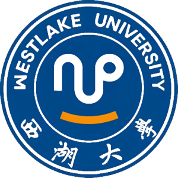

A research lab pursuing fundamental and applied work in Natural Language Processing — exploring general artificial intelligence through innovations in language-model architectures, training mechanisms, and reasoning, to advance discovery across the natural and human sciences.

Founded in September 2018 and led by Prof. Yue Zhang, we combine linguistic insight with modern machine learning to build language systems that reason, generalize, and assist discovery.
The lab is led by Prof. Yue Zhang (Ph.D., University of Oxford), Associate Dean of the School of Engineering at Westlake University and Fellow of the Association for Computational Linguistics (ACL). Author of Natural Language Processing (Cambridge University Press); program-committee chair for major NLP venues including EMNLP 2022; recipient of best-paper awards and nominations at ACL 2023, COLING 2018, and others.
Key projects supported by the National Natural Science Foundation of China, major national R&D programs, state key-laboratory initiatives, and industry collaborations. In 2024 the lab received the Third Prize for Natural Science from the China Computer Federation (CCF).
From foundational NLP tasks to frontier research on large language models and AI-driven scientific discovery.
Reasoning, alignment, evaluation, and out-of-distribution generalization of LLMs.
Neural and LLM-based machine translation; zero-shot and low-resource settings.
Structured prediction, event and relation extraction, cross-domain parsing.
LLM-driven research assistants: literature search, idea generation, and automated review.
Architectures and training mechanisms that push toward general-purpose reasoning.
Applying language models to accelerate discovery in the natural and human sciences.
We welcome prospective PhD students, postdoctoral researchers, research assistants, and visiting scholars. If our work resonates with you, please get in touch.
Email · zhangyue@westlake.edu.cn
Address · School of Engineering, Westlake University, Hangzhou
X / Twitter · @NlpWestlake
Bilibili · @WestlakeNLP